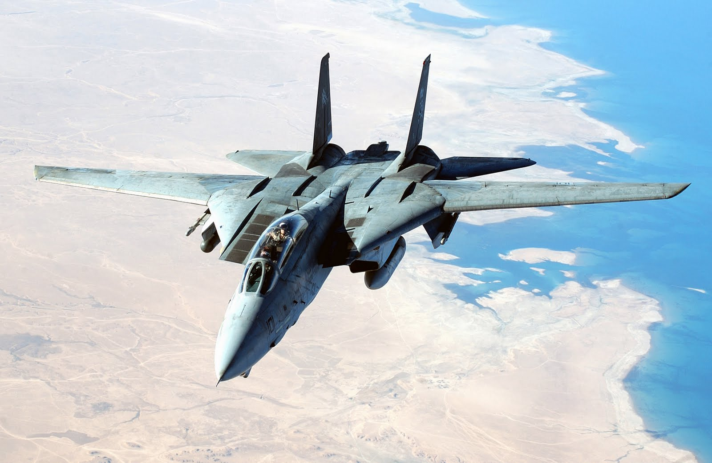

The Grumman F-14 Tomcat is an American carrier-capable supersonic, twin-engine, tandem two-seat, twin-tail, all-weather-capable variable-sweep wing fighter aircraft. The Tomcat was developed for the United States Navy's Naval Fighter Experimental (VFX) program after the collapse of the General Dynamics-Grumman F-111B project. A large and well-equipped fighter, the F-14 was the first of the American Teen Series fighters that were designed incorporating air combat experience against smaller, more maneuverable MiG fighters during the Vietnam War.
The F-14 first flew on 21 December 1970 and made its first deployment in 1974 with the U.S. Navy aboard the aircraft carrier USS Enterprise, replacing the McDonnell Douglas F-4 Phantom II. The F-14 served as the U.S. Navy's primary maritime air superiority fighter, fleet defense interceptor, and tactical aerial reconnaissance platform into the 2000s. The Low Altitude Navigation and Targeting Infrared for Night (LANTIRN) pod system was added in the 1990s and the Tomcat began performing precision ground-attack missions. The Tomcat was retired by the U.S. Navy on 22 September 2006, supplanted by the Boeing F/A-18E/F Super Hornet. Several retired F-14s have been put on display across the United States.
Having been exported to Pahlavi Iran under the Western-aligned Shah Mohammad Reza Pahlavi in 1976, F-14s were used as land-based interceptors by the Imperial Iranian Air Force. Following the Iranian Revolution in 1979, the Islamic Republic of Iran Air Force used them during the Iran–Iraq War. Iran claimed their F-14s shot down at least 160 Iraqi aircraft during the war (with 55 of these confirmed), while 16 Tomcats were lost, including seven losses to accidents.
Beginning in the late 1950s, the U.S. Navy sought a long-range, high-endurance interceptor to defend its carrier battle groups against long-range anti-ship missiles launched from the jet bombers and submarines of the Soviet Union. They outlined the idea of a Fleet Air Defense (FAD) aircraft with a more powerful radar and longer range missiles than the F-4 Phantom II to intercept both enemy bombers and missiles at very long range. Studies into this concept led to the Douglas F6D Missileer project of 1959, but this large subsonic aircraft would have limited ability to evade supersonic fighters or defend itself once it fired its missiles, and the project was canceled in December 1961.
The Navy still sought long-range defensive aircraft, but with higher performance than the Missileer. The Navy was directed to participate in the Tactical Fighter Experimental (TFX) program with the U.S. Air Force (USAF) by Secretary of Defense Robert McNamara, who favored versatile aircraft that could be shared by both services, reducing procurement and development costs. To this end, he had already directed the USAF to buy the F-4 Phantom II—which was developed for the Navy and could serve both as a fighter-bomber and an interceptor aircraft—instead of buying more F-105 Thunderchief and F-106 Delta Dart aircraft to fill each respective role.
The TFX had adequate speed, range and payload for the FAD role, but was designed primarily as a fighter-bomber and interdictor that lacked the maneuverability and overall performance that the Navy expected. The Navy strenuously opposed the TFX as it feared compromises necessary for the Air Force's need for a low-level attack aircraft would adversely impact the aircraft's performance as a fighter. Their concerns were overridden, and the project went ahead as the F-111B. Lacking recent experience in naval fighters, the F-111's main contractor, General Dynamics, partnered with Grumman to provide the experience needed to develop a naval version. Weight and performance issues plagued the program, and with the F-111B in distress, Grumman began studying improvements and alternatives. In 1966, the Navy awarded Grumman a contract to begin studying advanced fighter designs. Grumman narrowed down these designs to its Model 303 design.
Through this same period, experience in Vietnam against the more agile MiG fighters demonstrated that the Phantom lacked the maneuverability needed to win in any engagement. This led to the VFAX program to study new fighter aircraft that would either replace or supplant the Phantom in the fighter and ground-attack roles while the TFX worked the long-range interception role.[9] Grumman continued work on its 303 design and offered it to the Navy in 1967, which led to fighter studies by the Navy. The company continued to refine the design into 1968.
Around this time, Vice Admiral Thomas F. Connolly, Deputy Chief of Naval Operations for Air Warfare, flew the developmental F-111A variant on a flight and discovered that it had difficulty going supersonic and had poor carrier landing characteristics. He later testified before Congress about his concerns against the official Navy position and, in May 1968, Congress stopped funding for the F-111B, allowing the Navy to pursue an answer tailored to its requirements.
Free to choose their solution to the FAD requirement, VFAX ended in favor of a new design that would combine the two roles. In July 1968, the Naval Air Systems Command (NAVAIR) issued a request for proposals (RFP) for the Naval Fighter Experimental (VFX) program. VFX called for a tandem two-seat, twin-engine air-to-air fighter with a maximum speed of Mach 2.2. It would also have a built-in 20 mm M61 Vulcan cannon and a secondary close air support role.[12] The VFX's air-to-air missiles would be either six AIM-54 Phoenix or a combination of six AIM-7 Sparrow and four AIM-9 Sidewinder missiles. Bids were received from General Dynamics, Grumman, Ling-Temco-Vought, McDonnell Douglas, and North American Rockwell;[13] four bids incorporated variable-geometry wings.[12][N 1]
The name "Tomcat" was partially chosen to pay tribute to Connolly, as the nickname "Tom's Cat" had already been widely used within the program during development to reflect Connolly's involvement, and now the moniker was adapted into an official name in line with the Grumman tradition of giving its fighter aircraft feline names. Changing it to Tomcat associated the aircraft with the previous Grumman aircraft Wildcat, Hellcat, Tigercat, and Bearcat propeller fighters along with the Panther, Cougar, and Tiger jet fighters. Other names considered were Alley Cat (considered inappropriate due to sexual connotations) and Seacat.[14][15]
McDonnell Douglas and Grumman were selected as finalists in December 1968. Grumman's 303E design was selected for the contract award in January 1969. The design reused the TF30 engines from the F-111B, though the Navy planned on replacing them with the Pratt & Whitney F401-PW-400 engines under development for the Navy, along with the related Pratt & Whitney F100 for the USAF. Though lighter than the F-111B, it was still the largest and heaviest U.S. fighter to fly from an aircraft carrier, a consequence of the requirement to carry the large AWG-9 radar and AIM-54 Phoenix missiles (from the F-111B) and an internal fuel load of 16,000 lb (7,300 kg). The design service life was 6,000 flight hours, although this was later extended to 7,200 hours.
Upon winning the contract for the F-14, Grumman greatly expanded its Calverton, Long Island, New York facility for evaluating the aircraft. Much of the testing, including the first of many compressor stalls and multiple ejections, took place over Long Island Sound. To save time and avoid cancellation by the new presidential administration, the Navy skipped the prototype phase and jumped directly to full-scale development; the Air Force took a similar approach with its McDonnell Douglas F-15 Eagle.[19] The F-14 first flew on 21 December 1970, just 22 months after Grumman was awarded the contract. The fighter reached initial operational capability (IOC) in 1973. The United States Marine Corps was initially interested in the F-14 as an F-4 Phantom II replacement, going so far as to send officers to Fighter Squadron One Twenty-Four (VF-124) to train as instructors. The Marine Corps pulled out of any procurement when the development of the stores' management system for ground attack munitions was not pursued and decided the upcoming F-18 fit their role better.[20] An air-to-ground capability was not developed until the 1990s.[19]
Firing trials involved launches against simulated targets of various types, from cruise missiles to high-flying bombers. AIM-54 Phoenix missile testing from the F-14 began in April 1972. The longest single Phoenix launch was successful against a target at a range of 110 nmi (200 km) in April 1973. Another unusual test was made on 22 November 1973, when six missiles were fired within 38 seconds at Mach 0.78 and 24,800 ft (7,600 m); four scored direct hits, one broke the lock and missed, and one was declared "no test" after the radar signature augmentation in the target drone (which increased the apparent radar signature of the tiny drone to the size of a MiG-21) failed, causing the missile to break track. This gave a tested success rate of 80% since effectively only 5 missiles were tested. This was the most expensive single test of air-to-air missiles ever performed at that time.[21]
Throughout production, the F-14 underwent significant upgrades in missile armament, especially with the move to full solid-state electronics, primarily allowing for better Electronic counter-countermeasures (ECCM) and more space for the rocket motor. The AIM-54A Phoenix active-radar air-to-air missile was upgraded with the AIM-54B (1983, limited use) and AIM-54C (1986) versions.[22] The initial AIM-7E-4[23] Sparrow semi-active radar homing was upgraded to the AIM-7F in 1976, and the M variant in 1982.[24] The heat-seeking missile armament was upgraded from the AIM-9J/H to the joint Air Force/Navy missile, the AIM-9L in 1979, and then the AIM-9M in 1982.[25]
The Tactical Airborne Reconnaissance Pod System (TARPS) was developed in the late 1970s for the F-14. Approximately 65 F-14As and all F-14Ds were modified to carry the pod.[26] TARPS was primarily controlled by the Radar Intercept Officer (RIO) via an extra display for observing reconnaissance data. The "TARPS Digital (TARPS-DI)" was a 1996 upgrade featuring a digital camera. The digital camera was further updated beginning in 1998 with the "TARPS Completely Digital (TARPS-CD)" configuration that also provided real-time transmission of imagery.[27]
In 1984, plans were announced to replace the existing TF30 engines of the Tomcat with General Electric F110-GE-400 turbofans.[28] An initial, interim, version just replaced the TF30 with the new engine, retaining the original avionics. These aircraft were designated F-14A+, which was changed to F-14B in May 1991. 38 F-14Bs were newly built, with a further 43 converted from F-14As.[29][30] The F-14D variant was developed at the same time; it included the F110 engines with newer digital avionics systems such as a glass cockpit and compatibility with the Link 16 secure datalink. 37 F-14Ds were new builds while another 18 were converted from F-14As.[31] The Digital Flight Control System (DFCS) notably improved the F-14's handling qualities when flying at a high angle of attack or in air combat maneuvering.[32]
While the F-14 had been developed as a lightweight alternative to the 80,000 lb (36,000 kg) F-111B, the F-14 was still the heaviest and most expensive fighter of its time. VFAX was revived in the 1970s as a lower cost solution to replacing the Navy and Marine Corps' fleets of F-4s, and A-7s. VFAX was directed to review the fighters in the USAF Light Weight Fighter competition, which led to the development of the McDonnell Douglas F/A-18 Hornet as roughly a midsize fighter and attack aircraft.[33]
In the 1990s, with the pending retirement of the Grumman A-6 Intruder and the cancellation of the McDonnell Douglas A-12 Avenger II Advanced Tactical Aircraft (ATA), the F-14 air-to-ground program was resurrected. Trials with live bombs had been carried out in the 1980s; the F-14 was cleared to use basic iron bombs in 1992. During Operation Desert Storm of the Gulf War, most air-to-ground missions were left to LTV A-7 Corsair II, A-6 Intruder and F/A-18 Hornet squadrons, while the F-14s focused on air defense operations. Following Desert Storm, F-14As and F-14Bs underwent upgrades to avionics and cockpit displays to enable the use of precision munitions, enhance defensive systems, and apply structural improvements. The new avionics were comparable with the F-14D; these upgraded aircraft were designated F-14A (Upgrade) and F-14B (Upgrade) respectively.
By 1994, Grumman and the Navy were proposing ambitious plans for Tomcat upgrades beyond the D model (such as the Super Tomcat 21, the cheaper QuickStrike version, and the more advanced Attack Super Tomcat 21).[33] However, the upgrades would have taken too long to implement to meet the gap, and were priced in the billions. The U.S. Congress considered this too expensive for an interim solution.[26] A quick, inexpensive upgrade using the Low Altitude Navigation and Targeting Infrared for Night (LANTIRN) targeting pod was devised. The LANTIRN pod provided the F-14 with a forward-looking infrared (FLIR) camera for night operations and a laser target designator to direct laser-guided bombs (LGB).[34] Although LANTIRN is traditionally a two-pod system, an AN/AAQ-13 navigation pod with terrain-following radar and a wide-angle FLIR, along with an AN/AAQ-14 targeting pod with a steerable FLIR and a laser target designator, the decision was made to only use the targeting pod. The Tomcat's LANTIRN pod was altered and improved over the baseline configuration, such as a Global Positioning System/Inertial Navigation System (GPS/INS) capability to allow an F-14 to accurately locate itself. The pod was carried on the right wing glove pylon.
The LANTIRN pod did not require changes to the F-14's own system software, but the pod was designed to operate on a MIL-STD-1553B bus not present on the F-14A or B. Consequently, Martin Marietta specially developed an interface card for LANTIRN. The Radar Intercept Officer (RIO) would receive pod imagery on a 10-inch Programmable Tactical Information Display (PTID) or another Multi-Function Display in the F-14[citation needed] rear cockpit and guided LGBs using a new hand controller installed on the right side console. Initially, the hand controller replaced the RIO's TARPS control panel, meaning a Tomcat configured for LANTIRN could not carry TARPS and the reverse, but eventually a workaround was later developed to allow a Tomcat to carry LANTIRN or TARPS as needed.
An upgraded LANTIRN named "LANTIRN 40K" for operations up to 40,000 ft (12,000 m) was introduced in 2001, followed by Tomcat Tactical Targeting (T3) and Fast Tactical Imagery (FTI), to provide precise target coordinate determination and ability to transmit images in-flight.[2] Tomcats also added the ability to carry the GBU-38 Joint Direct Attack Munition (JDAM) in 2003, giving it the option of a variety of LGB and GPS-guided weapons.[35] Some F-14Ds were upgraded in 2005 with a ROVER III Full Motion Video (FMV) downlink, a system that transmits real-time images from the aircraft's sensors to the laptop of a forward air controller (FAC) on the ground.
In the early 1980s, the Navy anticipated that an Advanced Carrier-Borne Multirole Fighter (VFMX) would eventually be the long term high-end replacement for both the F-14 and A-6, although this program was short-lived and was succeeded by separate efforts for fleet air defense and deep strike/attack; the latter would become the ATA program under which the A-12 Avenger II was being developed.[37][38] In 1988, the service announced that it would procure a derivative of the Air Force's Advanced Tactical Fighter (ATF), named the Navy Advanced Tactical Fighter (NATF) that would eventually have been a navalized variant of the F-22, as the long term F-14 replacement.[39] However, the collapse of the Soviet Union resulted in declining defense budgets and also in a steep increase in the unit cost of the ATF and NATF due to reduced production rates. With tightening budgets, the Navy chose to focus on its top aviation priority, the A-12, and canceled the NATF in 1991, believing that the F-14D with upgrades would be viable for fleet air defense until 2015. However, the A-12 was cancelled shortly afterwards due to cost overruns and technical problems. As a result, the Navy launched a new attack aircraft program, the Advanced-Attack (A-X), while the F-14 with LANTIRN and ground attack upgrades would provide some interim capabilities, with Grumman proposing even more F-14 upgrades in the 1990s.
Although the F-14D was to be the definitive version of the Tomcat, not all fleet units received the D variant. In 1989, Secretary of Defense Dick Cheney refused to approve the purchase of any more F-14D model aircraft, stopping production after 37 F-14Ds had been built, although 18 more were produced by conversion of F-14As, giving a total of 55 F-14Ds.[41] An upgrade to the F-14D's computer software to allow AIM-120 AMRAAM missile capability was planned but was later terminated to free up funding for LANTIRN integration.[26] While upgrades kept the F-14 competitive with other teen series fighters, Cheney stated that the F-14 was 1960s technology. Despite an appeal from the Secretary of the Navy for at least 132 F-14Ds and some aggressive proposals from Grumman for a replacement,[42] Cheney planned to replace the F-14 with a fighter that was not manufactured by Grumman. According to Cheney, the F-14 was a "jobs program", and when the F-14 was canceled, an estimated 80,000 jobs of Grumman employees, subcontractors, or support personnel were affected.[43] The Navy would end up procuring the F/A-18E/F Super Hornet as the interim strike fighter for the A-X, which had become A/F-X (Advanced Attack/Fighter) due to added fighter capabilities although A/F-X itself would be canceled in the 1993 Bottom-Up Review. Cheney's cancellation of the F-14D was controversial and contributed heavily to Grumman's decline and resulting acquisition by Northrop Corporation to form Northrop Grumman.
The F-14 Tomcat was designed as both an air superiority fighter and a long-range naval interceptor,[45][46][47] which enabled it to both serve as escort fighter aircraft when armed with Sparrow missiles and fleet air defense loitering interceptor role when armed with Phoenix missiles.[48] The F-14 was designed with a two-seat cockpit with a bubble canopy which affords all-around visibility aiding aircrew in air-to-air combat. It features variable geometry wings that swing automatically during flight. For high-speed intercept, they are swept back and they swing forward for lower speed flight and increased endurance for loitering.[49] It was designed to improve on the F-4 Phantom's air combat performance in most respects.
The F-14's fuselage and wings allow it to climb faster than the F-4, while the "twin-tail" empennage (dual vertical stabilizers with ventral fins on the engine nacelles) offers better stability. The F-14 is equipped with an internal 20 mm M61 Vulcan rotary cannon mounted on the left side (unlike the Phantom, which was not equipped with an internal gun in the US Navy), and can carry AIM-54 Phoenix, AIM-7 Sparrow, and AIM-9 Sidewinder anti-aircraft missiles. The twin engines are housed in widely spaced nacelles. The flat area of the fuselage between the nacelles is used to contain fuel and avionics systems, such as the wing-sweep mechanism and flight controls, as well as weaponry since the wings are not used for carrying ordnance.[49] By itself, the fuselage provides approximately 40 to 60 percent of the F-14's aerodynamic lifting surface depending on the wing sweep position.[50] The lifting body characteristics of the fuselage allowed one F-14 to safely land after suffering a mid-air collision that sheared off more than half of the plane's right wing in 1991.
The landing gear is very robust, in order to withstand catapult launches (takeoffs) and recoveries (landings) needed for carrier operations. It comprises a double nosewheel and widely spaced single main wheels. There are no hardpoints on the sweeping parts of the wings, and so all the armament is fitted on the belly between the air intake ramps and on pylons under the wing gloves. Internal fuel capacity is 2,400 US gal (9,100 L): 290 US gal (1,100 L) in each wing, 690 US gal (2,600 L) in a series of tanks aft of the cockpit, and a further 457 US gal (1,730 L) in two feeder tanks. It can carry two 267 US gal (1,010 L) external drop tanks under the engine intake ramps.[49] There is also an air-to-air refueling probe, which folds into the starboard nose.